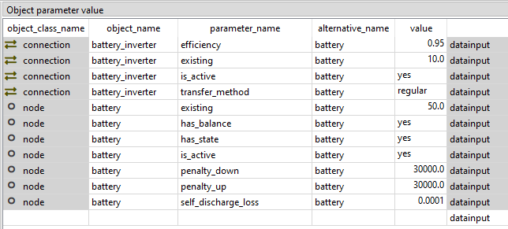
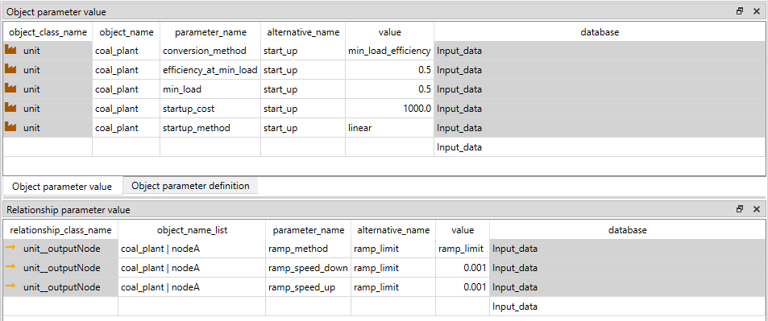
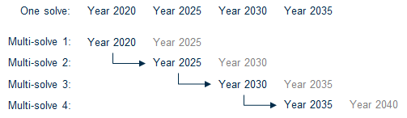

How to
How to section contains examples on how to include common energy system components in your model. The examples assume that you have sufficient understanding of FlexTool basics (e.g. by doing the tutorial). Each example will either include an example database file that is located in the 'how to examples databases' folder or the example is included in the init.sqlite as a scenario. If the example is in its own database, you can switch to that database by selecting the 'input' data store in the workflow and then changing the database by clicking the folder icon next to the current database file path in the 'Data store properties' widget. Navigate to the 'how to example databases' folder and choose the appropriate database.
How to create a PV, wind or run-of-river hydro power plant
(init.sqlite scenario: wind) init - west - wind
These three power plant types don't use any commodities (i.e. fuels), but are instead dependant on a timeseries profile. To create these plants one needs an output node, an unit and a profile.
The unit only needs parameters:
- is_active: yes
- existing: [The maximum capacity of the plant]
Additionally these parameters should be at their default values:
- conversion_method: constant_efficiency
- efficiency: 1
The profile object only has one parameter: profile. It is a timeseries map which tells what fraction of the capacity the plant can produce at each timestep.
The relationships
- unit__outputnode: (plant|output node) and
- unit__node__profile: (plant|output node|profile) need to be both created.
The unit__node__profile relationship needs a parameter profile_method that has three options: upper_limit, lower_limit and exact. It states how the profile is considered. In most cases the upper_limit option should be used as it allows the plant to curtail the production if there is more supply than demand. Otherwise the output node might have to use downward_penalty to spill energy.
The same profile can be used for multiple unit__outputnodes (and that is why the profile is not a unit parameter but its own entity).

How to connect nodes in the same energy network
(connections.sqlite)
Typically nodes are used to maintain an energy balance and therefore they are used to represent a location with demand or a storage. The nodes can pass energy to each other through a connection entity. This is often an electricity connection but it can be any form of energy (or matter) moving between two nodes. To create a connection one needs:
- two nodes
- connection
- relationship connection__node__node to tie these three together.
The connection needs the parameters:
- is_active: yes
- existing: The maximum capacity of the connection [MW]. Applies to both directions.
- efficiency: represents the losses in transferring the energy. Same in both directions.
Optional parameters:
- is_DC: yes, flag if the connection is counted as non-synchronous for the possible non-synchronous limit. If is_DC (direct current) is yes, then the connection is non-synchronous. More at: How-to create a non-synchronous limit
- transfer_method: Four options: regular (default), exact, variable_cost_only, no_losses_no_variable_cost.
In most cases regular should be used. The downside of it is that it allows the flows to both directions at the same time, but the model does this only in specific circumstances when its beneficial to leak energy through the connection losses. For example, if connection capacity is 500 and efficiency 0.8, both nodes can send 500, but recive only 400 reducing the incoming energy by 100 in both nodes without any cost.
Typically the model does not want to produce extra energy as it usually has costs, but it can happen if there is a cost to curtailing energy generation from a free source or if a unit is forced to generate at some level ('e.g. using profile_method: 'equal').
Exact method does not allow flow in both directions at the same time, but it requires a binary variable, which will be computationally heavier (especially if the model would otherwise be fully linear).
Variable_cost_only can be used when there are no losses associated with the flow. It allows costs related to the flow, but if losses are to be included, it should not be used.
The no_losses_no_variable_cost can be used when the connection has no losses and no variable costs accociated with the flow. It is computationally the most efficient method, as it uses only one variable for the flow (the variable becomes negative for the other direction, but this can work only when there are no losses or variable costs). It also prevents simultanoues flow to both directions.
The results of connections can be seen from the node_balance table. However, these are the results from all the connections connected to the node. If you want to have the results from an individual connection or specified connections, you can create a group of connection_nodes (group_connection_node) with a parameter output_results set to yes. This will produce sum_flow` results from the connection to the node.
The example database shows a connection between a two node system where the other node has a wind power plant and the other node has a coal power plant.

How to set the demand in a node
(demand.sqlite)
The demand in a node is set with the inflow parameter. When the node is consuming energy or matter, the values should be negative and when the node is supplying energy (or matter) the values should be positive. The inflow parameter accepts two types of data:
- Constant
- Timeseries map
If the model is using multiple periods, then the same timeseries profile is used for every period. However, the inflow can be scaled for different periods with the inflow_method parameter:
- scale_to_annual_flow: This will multiply the demand with a constant to make the summed inflow to match the annual_flow. This requires the node parameter annual_flow that is a map of periods containing the annual flow for each period. The sum of inflows is divided by the period's share of the year (hours in period /8760) before scaling (so that the annual energy demand/supply matches the annual_flow no matter what parts of the year are used to represent the full year).
- scale_in_proportion: calculates a scaling factor by dividing annual_flow with the sum of time series inflow (after it has been annualized using timeline_duration_in_years). This does not force the demand/supply to match annual flow in case the representative periods are not representing the full year, but the time series will still be scaled to capture the proportional change in the annual_flow parameter.
- scale_to_annual_and_peak_flow: The inflow scaled so that the peak is at the given peak_flow and the inflow sums to annual flow of the period. This is done by the following equation:
new_inflow = (peak/peak_old)*(1+c)*old_inflow-peak*c
where c =
[(peak/peak_old)*(8760/hours_in_period)*sum(old_inflow) - annual_flow]
/ [peak*8760 - (peak/peak_old)*(8760/hours_in_period)*sum(old_inflow)]
Examples of all these options are shown in the demand.sqlite.
How to add a storage unit (battery)
(init.sqlite, scenario: wind_battery) init - west - wind - battery
In the Init SQLite database, there is a scenario wind_battery.
In the example, the wind_plant alone is not able to meet the load in all conditions, but the battery will help it to improve the situation.
In FlexTool, only nodes can have storage. Nodes can therefore be demand nodes, storage nodes or both. To make a storage node one the required parameters are:
is_active: yeshas_balance: yeshas_storage: yesexisting: The maximum storage size of battery as the potential energy [MWh]penalty_up: a large number to prefer not creating energy from nowherepenalty_down: a large number to prefer not creating energy from nowhere
Additional parameters:
self_discharge_lossThe fraction of energy loss in each hour.
Storage states can be tied to a value. For this three methods are introduced:
storage_start_end_method: Fixes start and/or end state of the storage to a chosen value. This is for the start and the end of the whole model timeline (not for individual solves in case the model is rolling forward).storage_state_startandstorage_state_endset these values.
storage_bind_method: Forces the start and end values to be the same for the chosen time interval (timeblock, period or solve)storage_solve_horizon_method: Fixes the state of the storage at the end of the solve horizon or sets a price for the stored energy at the end of the solve horizonstorage_state_reference_valueandstorage_state_reference_priceset these values
Having multiple storage methods can create infeasible problems. This is why some of the combinations shouldn't (and cannot) be used at the same time. If multiple methods are used, some of them might be ignored by the method hierarchy. More information can be found from Model Parameters: Using nodes as storages.
Battery also needs charging and discharging capabilities. These could be presented either with a connection or by having a charging unit and a discharging unit. In here, we are using a connection called battery_inverter. Please note that the efficiency parameter of the connection applies to both directions, so the round-trip efficiency will be efficiency squared.
The transfer_method can be used by all types of connections, but in this case it is best to choose regular, which tries to avoid simultaneous charging and discharing, but can still do it when the model needs to dissipate energy. exact method would prevent that, but it would require integer variables and make the storage computationally much more expensive. Model leakage will be reported in the results (forthcoming).
The required paremeters of the connection are:
is_active: yesexisting: The capacity of energy transsmission [MW]transfer_method: (see above)
Additional parameters:
efficiency: by default 1
Finally connection_node_node relationship is needed between inverter, the battery and the demand node (west).

How to add investment parameters to a storage/unit
(init.sqlite scenario: wind_battery_invest) init - west - wind - battery - battery_invest
Here we will use the previous battery scenario to represent the investment options in the tool.
The solve will invest only if it has an array of invest_periods set, telling the periods where it is allowed to make investment decisions. In a multi solve investment model (rolling investments) it can be useful to separately set invest_realized_periods so that the investment results get reported only from the chosen periods from each solve (in order to avoid overlapping reporting of investment decisions that are replaced by investment decisions in later solves). Furthermore, realized_periods will define the solves and periods from which the dispatch results are output into results.
First, the investment parameters need to be included both for the battery_inverter and battery objects:
invest_method- the modeller needs to choose between only_invest, only_retire, invest_and_retire or not_allowedinvest_cost- overnight investment cost new capacity [currency/kW] for the battery_inverter and [currency/kWh] for the battery. Other one can be left empty or zero, since they will be tied together in the next phase. Here we will assume a fixed relation between kW and kWh for this battery technology, but for example flow batteries could have separate investments for storage and charging capacities.interest_rate- an interest rate [e.g. 0.05 means 5%] for the technology that is sufficient to cover capital costs. The chosen interest rate should reflect the assumption that in the model economic lifetime equals the technical lifetime.lifetime- technical lifetime of the technology to calculate investment annuity (together with the interest rate)
Additional parameters:
- invest_max_total: maximum investment (power [MW] or energy [MWh]) to the virtual capacity of a group of units or to the storage capacity of a group of nodes.
- In the same way investment limits can be set for total and period, investment and retirement, min and max
- lifetime_method: Model can either be forced to reinvest when the lifetime ends reinvest_automatic or have a choice reinvest_choice
- salvage_value: Sets the extra value that can be gained for retiring [CUR/kW]
- fixed_cost: Annual cost for capacity [CUR/kW]
- retire_forced: forces to retire at least this amount of capacity
In many cases some of the investment decisions are tied to each other. Here the battery capacity and the connection capacity of the battery_inverter will be tied as they are simultaneously limited by the choice of the battery technology to be invested in.
To model this, a new constraint needs to be created that ties together the storage capacity of the battery and the charging/discharging capacity of the battery_inverter. A new constraint object battery_tie_kW_kWh is created and it is given parameters constant, is_active and sense. Constant could be left out, since it is zero, but is_active must be defined in order to include the constraint in the battery_invest alternative. The sense of the constraint must be equal to enforce the kw/kWh relation.
Both battery_inverter and battery need a coefficient to tell the model how they relate to each other. The equation has the capacity variables on the left side of the equation and the constant on the right side.
sum_i(`constraint_capacity_coefficient` * `invested_capacity`) = `constant`
where i is any unit, connection or node that is part of the constraint
When the constraint_capacity_coefficient for battery is set at 1 and for the battery_inverter at -8, then the equation will force battery_inverter capacity to be 8 times smaller than the battery capacity. The negative term can be arranged to the right side of the equation, which yields:
1 x *battery* = 8 x *battery_inverter*, which can be true only if *battery_inverter* is 1/8 of *battery*
constraint_capacity_coefficient is not a parameter with a single value, but a map type parameter (index: constraint name, value: coefficient). It allows the object to participate in multiple constraints.
Finally, FlexTool can actually mix three different types of constraint coefficients: constraint_capacity_coefficient, constraint_state_coefficient and constraint_flow_coefficient allowing the user to create custom constraints between any types of objects in the model for the main variables in the model (flow, state as well as invest and divest). So, the equation above is in full form:
+ sum_i [constraint_capacity_coefficient(i) * invested_capacity]
where i contains [node, unit, connection] belonging to the constraint
+ sum_j [constraint_flow_coefficient(j) * capacity]
where j contains [unit--node, connection--node] belonging to the constraint
+ sum_k [constraint_state_coefficient(k) * capacity]
where k contains [node] belonging to the constraint
=
constant
where 'capacity' is existing capacity plus invested capacity
How to create combined heat and power (CHP)
(init.sqlite scenario: coal_chp) init - west - coal_chp - heat
First, a new heat node is added with the necessary parameters. The nodes can be used for energy form of energy or matter, so the heat demand node does not differ from the electricity demand node.
The required parameters are:
is_active: yeshas_balance: yesinflow: Map for the heat demand (negative) [MW]penalty_up: a large number to prefer not creating energy from nowherepenalty_down: a large number to prefer not creating energy from nowhere
The heating systems tend to have some level of storage capability, so one could also add storage parameters to the node as well, but here they are not used.
Then the coal_chp unit is made with a high efficiency parameter, since CHP units convert fuel energy to power and heat at high overall rates. In FlexTool, efficiency is a property of the unit - it demarcates at what rate the sum of inputs is converted to the sum of outputs. However, without any additional constraints, the unit is free to choose in what proportion to use inputs and in what proportion to use outputs. In units with only one input and output, this freedom does not exist, but in here, the coal_chp needs to be constrained as otherwise the unit could produce only electricity and no heat at 90% efficiency, which is not feasible.
This CHP plant is an another example where the user defined constraint (see the last equation in the previous example) is used to achieve the desired behaviour. In a backpressure CHP, heat and power outputs are fixed - increase one of them, and you must also increase the other. In an extraction CHP plant the relation is more complicated - there is an allowed operating area between heat and power. Both can be represented in FlexTool, but here a backpressure example is given. An extraction plant would require two or more greater_than and/or lesser_than constraints to define an operating area.
Electricity and heat outputs are fixed by adding a new constraint coal_chp_fix where the heat and power co-efficients are fixed. You need to create the two relationships unit__outputNode, for coal_chp--heat and coal_chp--west. As can be seen in the bottom part of the figure below, the constraint_flow_coefficient parameter for the coal_chp--heat and coal_chp--west is set as a map value where the constraint name matches with the coal_chp_fix constraint object name. The values are set so that the constraint equation forces the heat output to be twice as large as the electricity output.
Create constraint coal_chp_fix object with parameters:
- is_active: yes
- sense: equal
- constant: 0.0
Create unit_outputNode (coal_chp|heat):
- constraint_flow_coefficient : coal_chp_fix, -0.5
Create unit_outputNode (coal_chp|west):
- constraint_flow_coefficient : coal_chp_fix, 2
Again, the negative value can be turned positive by arranging it to the right side of the equality, creating this:
1 x *electricity* = 0.5 x *heat*, which is true only if *heat* is 2 x *electricity*

How to create a hydro reservoir
hydro_reservoir.sq
Note! This example concerns a single reservoir hydro power plant.
If the river system has multiple plants in a series and their operations are tied,
then multiple nodes and units are needed to represent the system.
The objective is to create a hydro power plant with a reservoir and connect it to a demand node.
Hydro reservoir power plant requires three components:
- Reservoir
node - Hydro
unit - Output
node
It can be useful to create a new alternative for these components to be able to include and exclude them from the scenarios.
The reservoir is made with a node as only nodes can have storage in FlexTool. The incoming water can be represented by the inflow parameter. It can be a constant or a time variant. The unit of the inflow should be the power that can be created from the quantity of the incoming water at maximum efficiency [MW]. In the same way, the existing storage capacity should be the maximum amount of stored energy that the reservoir can hold [MWh]. In this implementation of reservoir hydro power, there is an option to spill water (energy) from the storage so that it does not run through the plant. The simplest way of allowing spilling is setting the downward penalty of the node to 0. This way the energy can disappear from the storage without a cost. The quantity of spilled energy can be seen from the results as the 'downward slack' of the node.
The required parameters of the reservoir node are (node_c and node_t sheets if using Excel input data):
is_active: yeshas_balance: yeshas_storage: yesinflow: Mapping of the incoming water as the potential power [MW]existing: The maximum size of the reservoir as the potential energy [MWh]penalty_up: a large number to prefer not creating energy from nowherepenalty_down: 0 or a large number (spilling or not)- a
storage_methodto set the behaviour on how the storage levels should be managed - for short duration storages bind_within_timeblock may be best and for seasonal storages it could be best to use bind_within_solve. If historical storage level time series are available, it can be beneficial to use fix_start in thestorage_start_end_methodtogether withstorage_solve_horizon_methoduse_reference_value, which will pick the storage level at the end of each solve from the time series provided as a reference (storage_state_reference_value).
The unit is connected to the reservoir node and the output node nodeA (unit_c and unit_node_c in excel):
- The
efficiencyof the unit can be set to 1 as the inflow time series are directly expressed in MWh (using piecewise linear efficiency is naturally possible). - Set
existingcapacity [MW] is_active: yes- Create relations
unit__inputNode: hydro_plant|reservoir andunit__outputNode: hydro_plant|nodeA.

How to create a hydro pump storage
(hydro_with_pump.sqlite)
For a hydro pump storage one needs the following components:
- Demand node
- hydro_plant unit with
- storage node,
- hydro_pump unit with
- pump storage node
- a source for external energy (pumped storage plant will lose energy due to charging losses)
For the demand node and the hydro plant we will use the same components as in the previous hydro_reservoir example. With the difference that both demand and hydro_plant capacities are doubled. Wind power plant will be used as a source for external energy.
First create the pump_storage. This is the downstream storage from the hydro plant. Again it should have the parameters as the reservoir:
is_active: yeshas_balance: yeshas_storage: yesexisting: The maximum size of the storage [MWh]. Note that this really represents the mass of the water and it should be converted as the potential of the energy of the reservoir-plant system. So that 1 liter of water has the same energy in both storages.penalty_up: a large number to avoid creating energy from nowherepenalty_down: 0
In this example database, we have both a closed system and a river system. The difference is that in the closed system the inflow is zero in both reservoir and pump_storage. In river system we have the incoming water for the reservoir as in the reservoir example. In the downstream pump storage we implement a outflow as the negative inflow representing the minimum amount of water that has to flow out of the system at each timestep to not dry out the river. The penalty_down is set as 0 to allow it let more water go when it needs to, otherwise the storages will keep filling up if the incoming water is larger than the minimum outgoing water.
The storage level fixes should be the same in both storages (reservoir and pump storage). Here:
- fix_start_end_method: fix_start
- storage_state_start: 0.5
- bind_storage_method: bind_with_timeblock
This sets the starting storage levels to be 50%. The binding will also constrain the state of the storage at the end of of each timeblock to be the same as in the beginning of the timeblock.
Then create the pump unit. It only needs three parameters:
- efficiency = 1, The real efficiency of the pump is set elsewhere, so use 1.0 here.
- existing: The wanted capacity
- is_active: yes
Set the relationships as follows:
unit_outputNodefor (hydro_plant | nodeA), (hydro_plant | pump_storage ), (hydro_pump | reservoir)unit_inputNodefor (hydro_plant | reservoir), (hydro_pump | pump_storage), (hydro_pump | nodeA)
Your system should look something like:
Next comes the tricky part of preserving the water and energy as both are represented as generic energy in the model. This is done by setting extra coefficents and constraints to the flows. First the hydro_plant needs to both create the energy for the demand node and pass the mass to the pump_storage. This is done by doubling the efficiency in this example to 2 and setting a extra constraint to force the output flows to both the demand node and the storage to be the same.
For the hydro plant:
- Efficiency: 2
Create a new constraint (here plant_storage_nodeA_split) and add the parameters:
- is_active: yes
- sense: equal
- constant: 0.0
And for the unit_outputNodes:
- (hydro_plant | nodeA)
constraint_flow_coefficientMap: plant_storage_nodeA_split , 1 - (hydro_plant | pump_storage)
constraint_flow_coefficientMap: plant_storage_nodeA_split , -1 - Meaning:
flow to nodeA - flow to pump_storage = 0
As for the pump storage, we will have to make sure that the same amount of water leaves the pump_storage and enters the reservoir. Also it still should use electricity from the demand node without increasing the amount of water that is moving from storage to another. First to prevent the energy from the demand node from increasing the water flow, add a coefficient to the flow between the demand node and the pump.
unit_inputNode (hydro_pump|nodeA):
- Coefficient: 0 (Default is 1)
This prevents the water amount from increasing as:
unit_output_flow = coeff1 * unit_input_flow1 + coeff2 * unit_input_flow2.
We still have to make the unit to consume electricity even though it does not affect the unit output directly. This is done by setting a new constraint to tie the flows to the pump unit from pump storage and the nodeA. Add a constraint (here pump_storage_nodeA_fix) the with the parameters:
- is_active: yes
- sense: equal
- constant: 0.0
And setting parameters for unit_outputNode and unit_inputNode:
- (hydro_pump | nodeA) constraint_flow_coefficient Map: plant_storage_nodeA_split , 2
- (hydro_pump | pump_storage) constraint_flow_coefficient Map: plant_storage_nodeA_split , -1
2 * flow_from_nodeA - flow_from_pump_storage = 0
Note that here the (constraint_flow_coefficient Map: plant_storage_nodeA_split , 2) actually sets the efficiency of the pump.
This means that here only half of the electricity used by the pump can be recovered when that amount of water is used by the hydro_plant. (Two units of energy are used to move 1 unit of water_energy)
The constraint_flow_coefficient for pump_input should therefore be (1/efficiency)

How to add a minimum load, start-up and ramp
(ramp_and_start_up.sqlite)
Some plants cannot vary their output freely, but have some cost and limits associated with it. In this example we will add the minimum load behaviour to a coal_plant unit and add the cost and limits for starting up and ramping the plant respectively.
Minimum load requires that the unit must have an online variable in addition to flow variables and therefore a startup_method needs to be defined and an optional startup_cost can be given. The startup_cost is added to the total cost every time the unit is required to start-up. Here we use a value 1000 (Currency/MW started up).
The options for the startup_method are no_startup, linear and binary. binary would require an integer variable so linear is chosen. However, this means that the unit can startup partially. The minimum online will still apply, but it is the minimum of the online capacity in any given moment (flow >= min_load x capacity x online), where 0 <= online <= 1.
The online variable also allows to change the efficiency of the plant between the minimum and full loads. A unit with a part-load efficiency will obey the following equation:
+ sum_i[ input(i) * input_coefficient(i) ]
=
+ sum_o[ output(o) * output_coefficient(o) ] * slope
+ online * section
where slope = 1 / efficiency - section
and section = 1 / efficiency
- ( 1 / efficiency - min_load / efficiency_at_min_load) / ( 1 - min_load )
By default, input_coefficient and output_coefficient are 1, but if there is a need to tweak their relative contributions, these coefficients allow to do so (e.g. a coal plant might have lower efficiency when using lignite than when using brown coal).
The input is required at different ouput levels is shown in the figure below, when Capacity = 100, Efficiency = 0.8, Minimum load = 0.6 and Efficiency at minimum load = 0.5.

Next we will add ramp limits. With the ramping limits, the user can force the change of a flow from a unit to be below a certain value each timestep. The ramping is an attribute of the flow. Therefore it does not require the minimum load behaviour and its parameters are added to the unit_outputNode relationship:
- ramp_method: ramp_cost, ramp_limit or both. Only ramp limit is currently implemented (August 2023).
- ramp_speed_up: Limit on how fast the plant can ramp up. (fraction of unit / min) ie. Value 0.01 allows the change of 60% of capacity per hour.
- ramp_speed_down: Limit on how fast the plant can ramp down. (fraction of unit / min) ie. Value 0.01 allows the change of 60% of capacity per hour.
- ramp_cost: NOT YET IMPLEMENTED. The cost of ramping the capacity. [CUR/MW]

How to add CO2 emissions, costs and limits
(init.sqlite scenario: coal_co2 ) init - west - coal - co2_price - co2_limit
Carbon dioxide emissions are added to FlexTool by associating relevant commodities (e.g. coal) with a co2_content parameter (CO2 content per MWh of energy contained in the fuel).
The other CO2 parameters are handeled through a group of nodes (Here coal_price or coal_limit groups). Therefore one needs to create a group and add all the nodes that supply these commodities to a group with a group_node relationship. (Here the relationship co2_price--coal_market)
To set a price one needs to create set the co2_method parameter to price (constant) and create the co2_price parameter with the desired value. This price is added to the price of the commodity.
Alternatively one can set a limit on the co2 used by setting the co2_method parameter to period and setting the co2_max_period (periodic map) parameter. If both methods price and period are to be used, then they need to use different groups. The groups can include the same nodes.

How to create a non-synchronous limit
(non_sync_and_curtailment.sqlite) (scenario: non_sync)
Non-synchronous limit is a property of a group of nodes. It states that the non-synchronous flow to the node cannot exceed a set share of the input flows at any timestep. To demonstrate this we have set a system with a coal plant, a wind plant and a single demand node. However, it can be done to a group of nodes with unlimited amount of plants or connections connected. So, one can limit the share on invdividual nodes and the whole system.
The non-synchronous limit is set to a group of nodes with one or multiple members. Note: These are set to the group with group_node relationship, not with group_node_unit relationship!
Create a group (here nodeA_group) and set a group_node relationship (nodeA_group |nodeA). Then add parameters:
- has_non_synchronous : yes
- non_synchronous_limit: 0.5
- penalty_non_synchronous: 4000
This forces the non-sync flow to be at max 50% of the incoming flow to the nodeA.
The penalty should be always set as in some cases there is no other way to keep the constraint feasible (and it will be difficult to find the reason why the model does not solve). The existance of the non-synchrounous penalty in your results indicates that this constraint has been violated and you should investigate the reason for this in your system. If the penalty_non_synchronous is lower than the upward_penalty of the demand node, the system will prefer breaking the non-sync constraint instead of the node balance equation. In other words it will not curtail the production of profile plants if the demand is not satisfied even though it will break the non-synchronous penalty. If it is higher, the curtailment will take place instead.
Then set which plants and connections are considered non-synchronous by adding a parameters:
unit_outputNode:
- is_non_synchronous: yes
Connection_node_node:
- is_DC: yes
Here the (wind_plant|nodeA) has the is_non_synchronous parameter.
If you want to see the individual flows in the results you can create separate groups for the flows and add group_unit_node relations to it. To produce the flow results, the groups need the parameter
- output_results: yes
Here we have coal_flow group with group_unit_node relation coal_flow|coal_plant|nodeA
and wind_flow group with group_unit_node relation wind_flow|wind_plant|nodeA.

How to see the VRE curtailment and VRE share results for a node
(non_sync_and_curtailment.sqlite) (scenario: curtailment)
When the system has profile-units with the profile_method: upper_limit, the model can curtail the unit's flow to avoid penalties.
The curtailment could take place for several reasons: - the supply is higher than the demand and the energy cannot be stored or transferred (further) - non-synchronous limit - extra flow constraints have been set - other unit specific constraint affecting how VRE units or other units are forced to behave (ramp, start-up ...)
To see the curtailment results you need to add a group of nodes (group_node not group_unit_node !) with one or more members. The group then needs the parameter:
- output_results: yes
This produces the group: indicator result to the Results database and group_summary table to the excel.
These changes were done to the previous non-sync example database.
Note: The results are the share of curtailment in relation to the inflow (demand) so it can exceed 100% as seen in the figure.


How to create a multi-year model
(init.sqlite scenario: multi_year / multi_year_one_solve) init - west - wind - coal - coal_invest - 5weeks - multi-year - multi_year_one_solve
A multi-year model is constructed from multiple periods, each presenting one year. In the example case, each year is otherwise the same, but the demand is increasing in the west node. This means that all periods can use the same timeblockset 5weeks from the same timeline y2020, but one can also make separate timelines for each year, if data is available for this. The inflow time series are scaled to match the value in annual_flow that is mapped for each period. The model is using the inflow_method scale_to_annual in order to achieve this (default is use_original that would not perform scaling). There should also be a discount_rate parameter set for the model object flexTool if something else than the model default of 5% (0.05 value) is to be used.
A multi-year model could be solved at one go (multi_year_one_solve) or by rolling through several solves (multi-year) where each solve has a foresight horizon and a realisation horizon as can be seen from the figure below. In this example, the model rolls through several solves and therefore, in the figure above, the model object flexTool has four values in the solves array. Each value respresents one solve and it's position in the sequence of solves.

Next figure shows the values needed to define one solve (out of the four solves in the example). All of these need to be repeated for each solve in the model.
years_representedparameter is used by the model to calculate the discounting factors for the periods in the model (often future years). It should state the number of years each period will be representing. For example, a period for 2025 could represent the years 2025-2029 if itsyears_representedis set to 5. Any investments would be take place at the start of 2025 and discounted to the beginning of 2025, but the operational costs would accrue from each year in 2025-2029 each with a different discounting factor (decreasing based on the interest rate).invest_periodsthe periods in which the model is allowed to make investments. To be given for each solve.realized_periodsthe periods that will be realized in this solve (outputs dispatch results for these periods). To be given for each solve.invest_realized_periodsparameter states the periods that will realize the investment decisions. If not stated, it will userealized_periods.period_timeblocksetdefines the set of representative 'periods' (timeblocks in FlexTool) to be used in each FlexToolperiod.
How to use CPLEX as the solver
Using CPLEX requires that you have installed the software, have a licence for it and have added it to PATH or to the environment where you are using the FlexTool, so that the tool can find the solver.
CPLEX is used when the solve parameter solver is set to 'cplex'. The tool passes the built optimization model to the CPLEX solver and converts the solution file to a filetype suitalbe for CPLEX. The solver will produce two additional files to the work directory: 'cplex.log' and 'flexModel3_cplex.sol'. The former is the logfile of the solver and the latter contains the solution in the CPLEX format.
The tool uses Interactive Optimizer to pass the problem to the solver. The default command used:
cplex -c 'read flexModel3.mps' 'opt' 'write flexModel3_cplex.sol' 'quit'
Additional parameters:
solver_precommandcreates a text in front of the cplex call. This is useful when dealing with floating licences. The command allows to call the licence server to reserve the licence for the duration of the cplex program with a command line argument.solver_argumentsis an array containing additional CPLEX solver commands
With these parameters, the command line call is:
'solver_precommand' cplex -c 'read flexModel3.mps' 'solver_command1' 'solver_command2' ... 'solver_command_last' 'opt' 'write flexModel3_cplex.sol' 'quit'